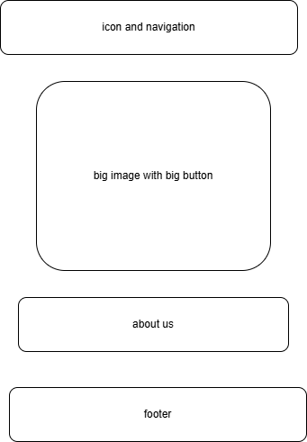

Site Name
Teas & Tales – Book Café Website
The name represents a warm, cozy place where customers enjoy delicious teas while discovering new
stories. It blends tea culture with reading culture, making it ideal for branding.
Optional Domain: teasandtalescafe.com (availability varies)
Site Purpose
Teas & Tales is a cozy book café website that blends warm beverages with immersive fictional literature.
It provides:
- A homepage showcasing atmosphere, stories, and community.
- A teas page with beverage + book pairings.
- A contact page with location, phone, and email.
- A membership form for The Tea Girls.The site provides a cozy online hub for book lovers and café
visitors. It introduces the café atmosphere,
showcases teas and pastries, highlights book club events, and provides contact options. Lazy-loading
images help maintain performance.
Scenarios
- What teas and pastries does Teas & Tales serve?
- Does the café host book club meetings or reading events?
- How do I contact Teas & Tales for inquiries or event bookings?
- Where is the café located and what are the opening hours?
Color Scheme
| Color |
Hex Code |
Usage |
| primary-color |
#245124; |
Navigation, accents, buttons |
| accent1-color |
#FFFDD0; |
Background |
| secondary-color |
: #4B3621 |
Headings, titles |
| accent2-color |
#C0808 |
Accents, borders |
Typography
----------
**Primary Fonts:**
- **Crimson Text** – body text and paragraphs.
- **Dancing Script** – headings, titles, and accent phrases.
- *Crimson Text, cursive Headings, hero text
- Dancing Script, serif: Body text, navigation, buttons
Wireframes
Mobile View

Desktop View

Testing
- HTML validated and accessible
- CSS validated with correct contrast and readability
- Lazy-loading images for performance
- Keyboard-friendly navigation and alt text on images
- Strong meta tags for SEO
- color contrast
Page Descriptions
index.html (Homepage)
Introduces the caféand gives information about the cafe.Reminder to create a json file for the teas and books
teas.html (Teas & Pairings)
Table of drinks paired with books plus a selection form and after selecting you are taken to a pae that shows
your order and thanks you
contact.html, FAQ, images, and a join form(Contact & Location)
Phone, email, address, map, and a join us form .
Lazy Loading Explanation
The website uses JavaScript to implement lazy loading for all images. When the page loads, images are
assigned a temporary placeholder while the actual image source is stored in a data-src
attribute. An IntersectionObserver watches when each image enters the viewport. When an image
becomes visible, the script swaps the placeholder with the real image, removes the lazy class, and stops
observing the image. This improves page performance and loading speed, especially on mobile devices.
JavaScript Features Summary
- Mobile Navigation Toggle: The hamburger menu opens and closes the navigation using
classList.toggle(), and updates aria-expanded for accessibility.
- Auto-Close Navigation: When users tap a navigation link on mobile, the menu closes
automatically.
- Lazy Loading: Uses
IntersectionObserver to load images only when needed,
improving performance.
- Footer Date Scripts: Automatically displays the current year and last modified date
using JavaScript.
- Data fetching: fetch data from a json file directly
using JavaScript.
- Dynamic Content Generation: Generate and display atleast 15 items from a data source
using JavaScript.
- Modal Dialogs: comfirm an action also create an animation
using JavaScript.
- DOM Manipulation and Event Handling: Select elements using appropriate methods
using JavaScript.
- Array methods: use atleast one array method
using JavaScript.
- Template literals: use template literals for string construction
using JavaScript.
- ES Modules: structure my js code using ES modules to demonstrate proper code
organisations.